|
พระพุทธรูปประจำเดือนเกิด
นำเสนอโดย...พระมหาบุญโฮม ปริปุณฺณสีโล (ไชยฤทธิ์) วัดท่าไทร จ.สุราษฎร์ธานี |
|
โดยแท้ที่จริงแล้ว คนเราจะเกิดในวัน เดือน และปีใดก็สามารถที่จะทำการสักการะบูชาพระพุทธรูปทุกปาง
ทุกขนาด แล้วเกิดสิริมงคล เป็นบุญกุศล และมีสวรรค์เป็นที่ไปในเบื้องหน้า
แต่ที่นำมาเสนอในที่นี้ เพื่อเป็นข้อมูล เชิงเปรียบเทียบกับเหตุการณ์ที่เกิดขึ้นในเดือนต่าง
ๆ เพื่อให้ได้รับทราบว่า นอกจากจะมีพระพุทธรูปประจำวันเกิดแล้ว ยังพระพุทธรูปประจำเดือน
และประจำปีเกิดด้วย ดังนั้น จึงขอนำเรื่องนี้มาเสนอ เพื่อเป็นข้อมูลแก่ท่านที่สนใจ
ในพุทธประวัติเล่าว่าท้าวสักกเทวราชเสด็จลงมาช่วยทำจีวร
ตักแต่ซัก ตาก และเย็บเสร็จภายในคืนเดียว ผ้าจีวรผืนนี้พระพุทธองค์ทรงนำมาทำผ้าสังฆาฏิ
ภายหลังได้ประทานผ้าผืนนี้แก่พระมหากัสสปะ ผู้เป็นเอตทัคคะด้านถือธุดงค์
|
|
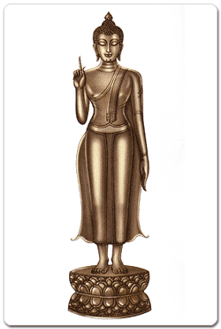พระประจำเดือนยี่
|
|
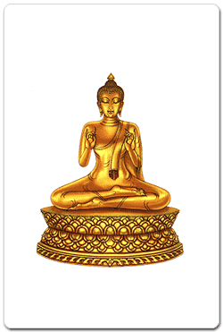พระประจำเดือน
3 |
|
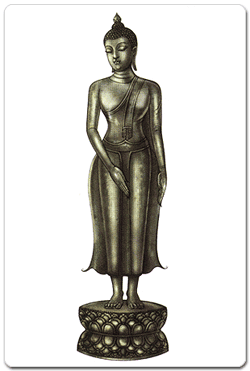พระประจำเดือน
4
พระพุทธรูปอยู่ในพระอิริยาบทยืน พระหัตถ์ขวาห้อยเยื้องมาข้างหน้า พระหัตถ์ซ้ายห้อยลงตามปกติ
บางแบบพระหัตถ์ซ้ายห้อยลงมาข้างหน้า พระหัตถ์ขวาห้อยลง เอี้ยวพระวรกายผินพระพักตร์
เหลียวไปข้างหลัง บางแบบยกพระหัตถ์ขวาขึ้นเสมอพระอุระ
|
|
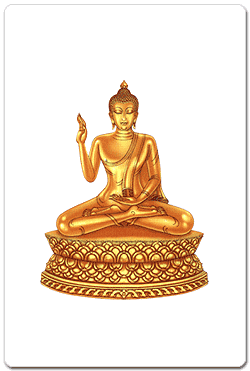พระประจำเดือน
5
ทรงเลื่อมใสที่พระนาคเสนตอบข้อสงสัยในพระพุทธศาสนาของพระองค์ได้ทุกแง่ทุกมุม
พระเจ้ามิลินท์จึงทรงได้ขอถึงพระรัตนตรัยเป็นที่พึ่งที่นับถือสูงสุดในชีวิต
และรับสั่งให้สร้างพระพุทธรูปขึ้นบูชาในเมืองคันธาระ
|
|
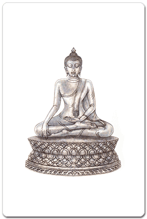พระประจำเดือน
6
|
|
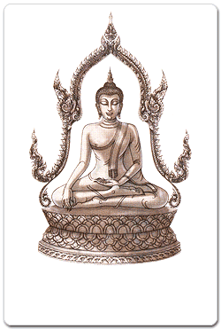พระประจำเดือน
7
|
|
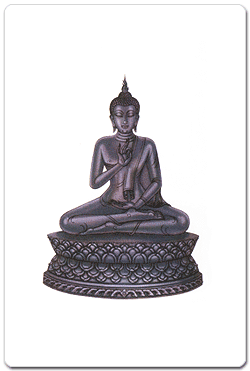พระประจำเดือน
8 พระพุทธรูปอยู่ในพระอิริยาบทประทับ (นั่ง) ขัดสมาธิ บางแบบประทับ (นั่ง) ห้อยพระบาท พระหัตถ์ขวาจีบนิ้วพระหัตถ์เป็นวงกลม พระหัตถ์ซ้ายวางบนพระเพลา (ตัก) บางแบบพระหัตถ์ซ้ายประคองพระหัตถ์ขวา หรือพระหัตถ์ซ้ายยกขึ้นถือชายจีวร
พระพุทธองค์ได้ทรงแสดงปฐมเทศนา
คือ ธรรมจักกัปปวัตนสูตร โปรดปัญจวัคคีย์ คือ โกณทัญญะ วัปปะ ภัททิยะ
มหานามะ และอัสสชิ ที่ป่าอิสิปตนมฤคทายวัน (ปัจจุบันเรียกว่า สารนาถ)
เมื่อพาราณสี เป็นเหตุให้โกณฑัญญะได้บรรลุธรรมตามพระพุทธองค์ เป็นพระอริยสงฆ์องค์แรก
ผู้เป็นสักขีพยานการตรัสรู้ ของพระพุทธองค์ ได้อุปสมบทในพระพุทธศาสนาด้วยเอหิภิกขุอุปสัมปทา
เป็นวันที่พระสังฆรัตนะเกิดขึ้นเป็นครั้งแรกในโลก วันนี้จึงถือว่า
เป็นวันที่พระรัตนตรัยเกิดขึ้น ในโลกอย่างสมบูรณ์ |
|
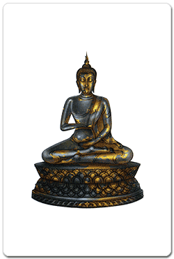พระประจำเดือน
9
พระพุทธรูปอยู่ในพระอิริยาบทประทับ
(นั่ง) ขัดสมาธิ พระหัตถ์ซ้ายประคองบาตรซึ่งวางอยู่บนพระเพลา (ตัก)
พระหัตถ์ขวาหย่อนลงในบาตร เป็นกิริยาเสวย
พระพุทธองค์ทรงประทานเอหิภิกขุอุปสัมปทาให้ยสกุลบุตร วันต่อมาทรงรับนิมนต์ไปเสวยภัตตาหารที่บ้านบิดาพระยสะ
นับเป็นครั้งแรกที่เสด็จไปเสวยภัตตาหารตามบ้านและได้ทรงแสดงธรรมโปรดมารดาและภรรยาเก่าของพระยสะ
จนได้ดวงตาเห็นธรรม เป็นพระโสดาบัน และขอถึงพระรัตนตรัยเป็นที่พึ่งเป็นอุบาสิกาคู่แรกในพระพุทธศาสนา
|
|
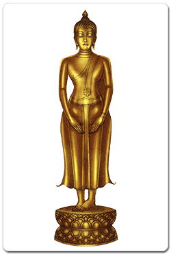พระประจำเดือน
10 |
|
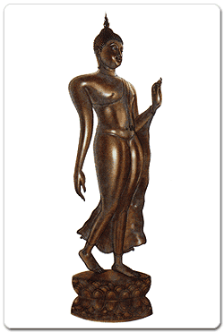พระประจำเดือน
11
พระพุทธรูปอยู่ในพระอิริยาบทยืนยกส้นพระบาทขวา
พระหัตถ์ขวาห้อยในท่าไกว พระหัตถ์ซ้าย (บางตำนานว่าพระหัตถ์ขวา) ยกเสมอพระอุระ
(อก) ตั้งฝ่าพระหัตถ์ป้องไปเบื้องหน้า บางแบบจีบนิ้วพระหัตถ์ บางตำราใช้ปางเสด็จลงจากดาวดึงส์เป็นพระประจำเดือนนี้
เมื่อครั้งที่พระสัมมาสัมพุทธเจ้าเสด็จลงจากสวรรค์ชั้นดาวดึงส์
พร้อมด้วยเหล่าเทวดาและพรหมที่ตามมาส่งเสด็จนั้น ขบวนตามเสด็จมาหยุด
ณ ประตูสังกัสสนคร เมืองที่พระสารีบุตรจำพรรษาอยู่ พระพุทธองค์ทรงมีพุทธลีลาและพระสิริงดงามยิ่ง
ครอบงำรัศมีของเหล่าเทวดาและพรหมทั้งหลาย เป็นภาพที่งดงามเหนือคำบรรยาย
เป็นที่ชื่นชมโสมนัสแก่พุทธบริษัทที่เฝ้ารับเสด็จ
|
|
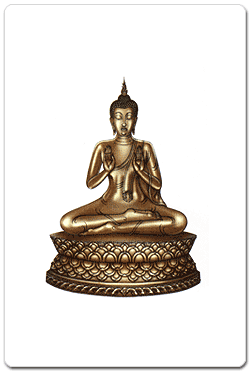พระประจำเดือน
12 |